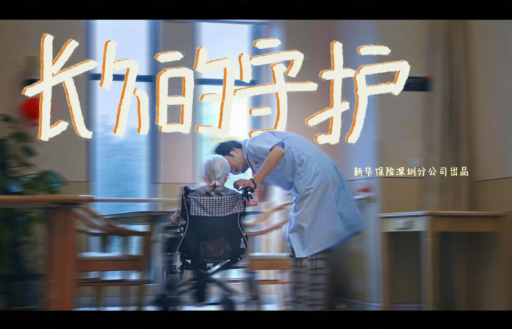
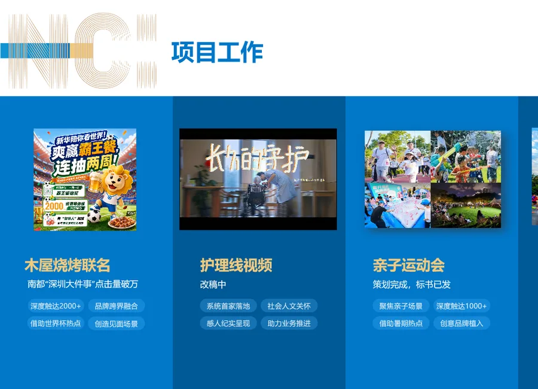

把保险品牌带入高频、松弛的生活消费场景。
协同联名机制与传播内容，借助门店网络触达年轻家庭客群，并以本地媒体放大品牌跨界话题。
- 梳理联名权益与门店传播触点
- 协同物料、内容与活动节奏
- 跟进本地媒体投放与传播反馈
我的角色 联名方案协同 · 内容与媒介统筹 · 门店传播推进
五区 / 四十五天协同联名机制与传播内容，借助门店网络触达年轻家庭客群，并以本地媒体放大品牌跨界话题。


以不足 10 万元预算覆盖五区门店与 45 天活动周期；南都“深圳大件事”传播点击超过 1 万。